A field journal
of days
Warm linen paper with visible grain, near-square parchment cards pinned slightly crooked, washi tape on the important ones, and botanical illustrations pressed onto the page as living status indicators. A quiet serif for display, a wide-tracked mono for metadata, one line of handwriting per card at most.
Ring or whisper — never shout. ✿
- Big sizes are quiet weights. Never bold and huge.
- Metadata is always mono, uppercase, tracked wide.
- Handwriting is an aside — never inside a button or a label.
- No hard black; #2a2420 bark is as dark as text goes.
Seven botanical illustrations stand in for the app's surfaces. Each has a state axis — the flower's appearance means something (a count, a progress, a time of day). Never decoration, never invented.
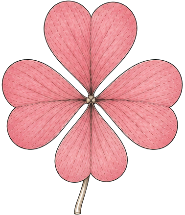
- Tape only on placed standalone cards — never plain list items.
- Tape color matches the card's surface accent.
- Card radius is 3px — sharp, not modern-rounded.
- Tilt is ±0.3–0.5°, applied sparingly. One gold Goal card per view.
One strip, one job: it says someone put this here on purpose. Always a translucent tint over the card edge, always striped, always slightly off-axis. Never opaque, never centered-and-straight, never decorative filler.
- Placed standalone cards — Goal of the day, resurfaced notes, herbarium specimens, project cards.
- The active sidebar item (30×9px, page accent, −3°) — the one exception to "cards only".
- Top edge overhanging by 6–10px, or corner-diagonal on a photo.
- Pair strips at opposite corners when the card is wide (>280px).
- On list rows, table rows, inputs, buttons, toasts or calendar blocks.
- More than two strips per card, or more than three taped cards per screen.
- Opaque fills, gradients, drop shadows heavier than --shadow-crisp, or a rotation of exactly 0°.
- Tape carrying meaning — it is never a status, a badge, or a colour code.
Press is a 100ms overlay + scale 0.97 (no hover state is ever required); sheets enter 300ms on emphasized-decel and leave 200ms on emphasized-accel; entries fade up and stagger. Ambient budget: ≤2 continuous animations per screen. All respect prefers-reduced-motion.
- Semantic tokens only — never a hex literal in a component.
- One terra CTA and at most one gold Goal card per view.
- Each surface keeps its own accent flower color.
- Metadata always mono, uppercase, tracked — ≤0.07em on a phone.
- Every tappable thing owns a 48 × 48 target; every gesture has a tap path (⋯).
- Delete is instant: Trash + Undo toast. No “are you sure”.
- No pure white or hard black. No bright saturated primaries.
- No modern rounded-16 cards; no brutalist hard shadows.
- No tape on plain list items; no invented flower species.
- No emoji beyond the ✿ marker; no more than 4 section labels.
- Never show a stage that contradicts the data — no zero bloom on a full inbox.
- Nothing that only appears on hover. Nothing under 12px on a phone. --ink-hairline is never text.
Every species answers three questions at once: which surface is this, how is it going, does anything need me? The stage shown must always match the data — a zero bloom on an inbox with items is a lie the garden never tells. Full logic lives in Floral Logic.txt.
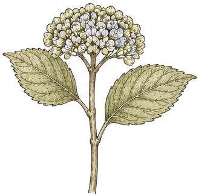
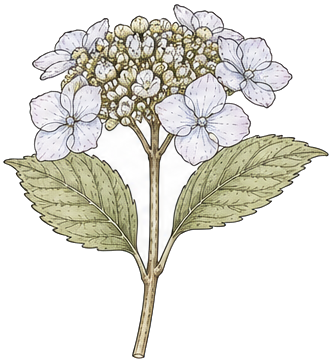
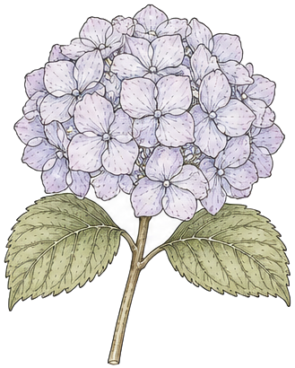
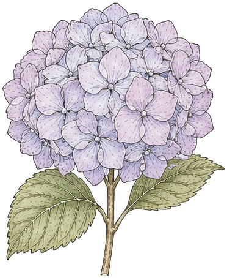


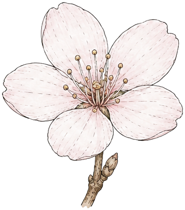

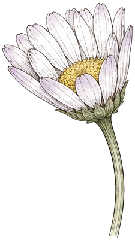

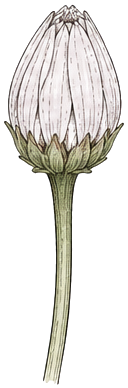
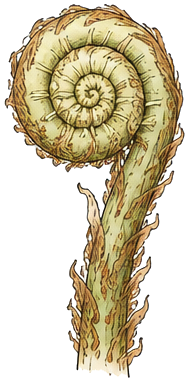

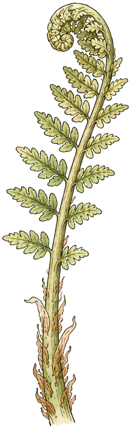
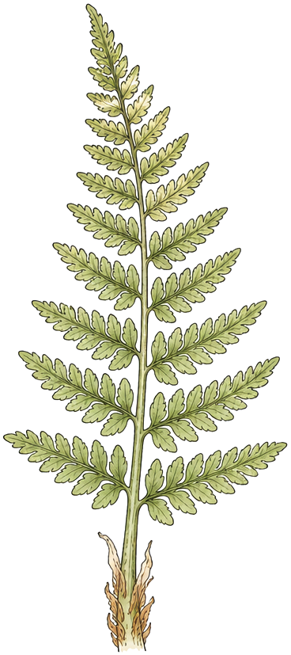


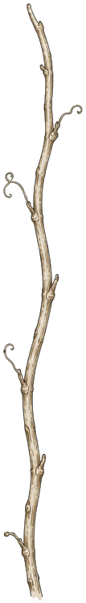
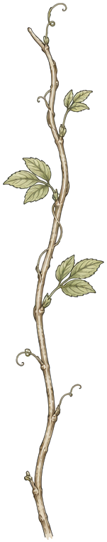
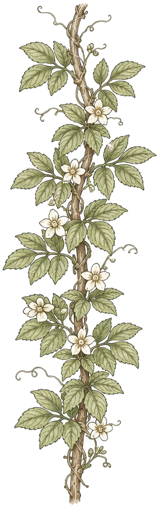
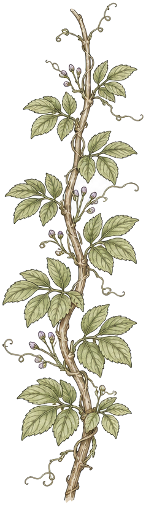

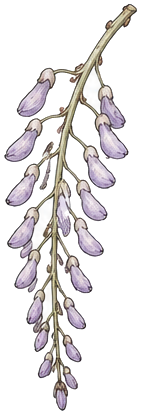
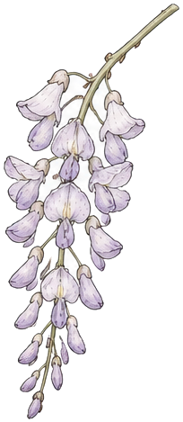
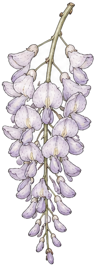
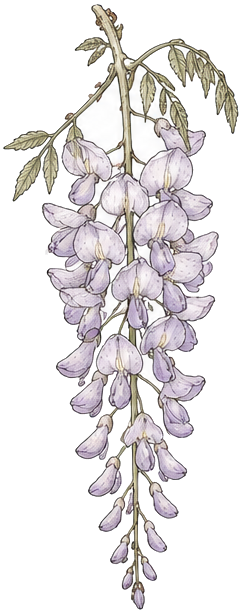
Two families only. Stroked line icons carry every UI action — thin, geometric, unemotional, so they never compete with the paper. Filled botanical marks are illustration, not UI: they identify surfaces and growth states and are never clickable affordances on their own.
A pressed-flower field journal. Warm paper, hand-set type, botanical specimens taped down, dashed rules like a ruled notebook. Everything reads as placed by a person, never generated. Icons are the pencil lines on that page: fine, consistent, secondary to the content.
Solid petal shapes built from <ellipse> clusters, filled with the surface accent, no stroke. One per surface — they are the surface's identity.
- A botanical mark as a button, toggle or menu-row icon.
- Mixing the families inside one row or one toolbar.
- Emoji, duotone, gradient fills, or a second icon library.
Ship this set and no more. If a screen needs a 21st icon, it probably needs a label instead. Keywords are the terms to grep for in code and in the Figma library.
- It anchors a repeated row type (menu rows, detail fields) and is always paired with a label.
- Space is genuinely gone — toolbars, the FAB, mobile tab bar.
- It marks a state the eye must catch fast: alert, check, grip.
- The label already says it — no icon on text buttons or section labels.
- It would be the only icon on the screen; one lone icon reads as debris.
- You'd have to invent a metaphor. Write the word instead.